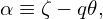
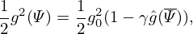

In the GS equation, g(Ψ) is one of the two free functions which can be prescribed by users. In some cases, we want to specify the safety factor profile q(Ψ), instead of g(Ψ), in solving the GS equation. Next, we derive the form of the GS equation that contains q(Ψ), rather than g(Ψ), as a free function. The safety factor defined in Eq. (160) can be written
Equation (443) gives the relation between the safety factor q and the toroidal field function g. This relation can be used in the GS equation to eliminate g in favor of q, which gives|
| (444) |
![[ ]
-dg -(2π)2-- --(2π-)2-- ′
⇒ dΨ g = V′⟨R −2⟩q V ′⟨R −2⟩qΨ ψ.](tokamak_equilibrium577x.png) | (445) |
Note that this expression involves the flux surface average, which depends on the flux surface shape and the shape is unknown before Ψ is determined.
Multiplying Eq. (573) by R−2 gives
|
| (446) |
Surface-averaging the above equation, we obtain
|
| (447) |
 | (448) |
![[ ( ) ]
2π- ′∫ |∇ψ-|2 -dp −2 dg-
‚áí V‚Ä≤ Œ® dùúÉ ùí• R2 œà + Œº0dŒ® + ⟨R ⟩dŒ®g = 0,](tokamak_equilibrium581x.png) | (449) |
|
| (450) |
![[ ⟨ 2⟩]
⇒ V′Ψ′ |∇-ψ2|- + μ0V′ dp-+ ⟨R−2⟩V′ dg-g = 0,
R ψ dΨ dΨ](tokamak_equilibrium583x.png) | (451) |
Substitute Eq. (445) into the above equation to eliminate gdg∕dΨ, we obtain
![[ ⟨ ⟩ ] [ ]
′ ′ |∇ψ|2 ′dp- 4 --qΨ-′--
⇒ V Ψ R2 ψ + μ0V dΨ + q(2π) V ′⟨R− 2⟩ ψ = 0,](tokamak_equilibrium584x.png) | (452) |
Eq. (452) agrees with Eq. (5.55) in Ref. [16].
![⟨ ⟩ [ ⟨ ⟩] [ ] [ ]
⇒ V ′ |∇ψ-|2 Ψ′′+ V′ |∇-ψ|2 Ψ′+μ V ′ dp+q (2π)4 ---q----Ψ ′′+q (2π)4 ---q---- Ψ′ = 0
R2 R2 ψ 0 dΨ V′⟨R −2⟩ V′⟨R−2⟩ ψ](tokamak_equilibrium585x.png) | (453) |
![{ }
′′ 1 [ ′⟨|∇ψ |2⟩ ] ′ 4[ q ] ′ ′ dp
⇒ Ψ = −V-′D V --R2- Ψ +q(2π) V-′⟨R-−2⟩ Ψ + μ0V dΨ-
ψ ψ](tokamak_equilibrium586x.png) | (454) |
where
 | (455) |
The GS equation is
 | (456) |
![4 [ ′ ]
⇒ △ ⋆Ψ = − μ0R2-dp− q(2π)-----qΨ----
dΨ V′⟨R −2⟩ V ′⟨R −2⟩ ψ](tokamak_equilibrium589x.png) | (457) |
![4 { [ ] [ ] }
⇒ △ ⋆Ψ = − μ0R2-dp− q(2π)--- ---q---- Ψ′ + ---q---- Ψ′′
dΨ V′⟨R −2⟩ V ′⟨R−2⟩ ψ V ′⟨R− 2⟩](tokamak_equilibrium590x.png) | (458) |
Using Eq. (454) to eliminate Ψ′′ in the above equation, the coefficients before (−μ0dp∕dΨ) is written as
![{ [ ] }
B = R2 − -q(2π)4-- ---q---- -1--V′
V′⟨R −2⟩ V′⟨R−2⟩ V′D
1 { 2 ( q )2 (2π)4 }
= D- R D − V-′ ⟨R−-2⟩2 . (459)](tokamak_equilibrium591x.png)
A = −![{[ ] [ ] [( ⟨ 2⟩ ) [ ] ]}
-′-q−2-- − -′-q−2----1′- V ′ |∇ψ2| + q(2π)4 -′-q−2--
V ⟨R ⟩ ψ V ⟨R ⟩ V D R ψ V ⟨R ⟩ ψ](tokamak_equilibrium594x.png)
|
Define
α =  , ,
|
β =  . .
|
| A = −(2π)4β |
|
| (461) |
![= ⇒ ---D----A = D β − β-1[V′′α + V ′α + q(2π )4β ]
− β(2π)4 ψ V ′ ψ ψ](tokamak_equilibrium599x.png) | (462) |
Using
 | (463) |
Eq. () is written as
![]
=⇒ ---D---A = αβ + (2π)4⟨R −2⟩β2β − β-1-V′′α − β-1V ′α − β 1-q(2π )4β
− β(2π)4 ψ ψ V ′ V ′ ψ V′ ψ](tokamak_equilibrium601x.png) | (464) |
![D 4 −2 2 1 ′′ 1 4 ]
=⇒ −-β(2π-)4A = α βψ + (2π) ⟨R ⟩β βψ − β V′V α − βαψ − βV-′q(2π) βψ](tokamak_equilibrium602x.png) | (465) |
|
| (466) |
 | (467) |
 | (468) |
|
| (469) |
![[ ]
A (α ) 1 α
=⇒ −-β(2π)4D = − β2 -β + V-′V ′′β-
ψ](tokamak_equilibrium607x.png) | (470) |
|
| (471) |
 | (472) |
![4 ( )3 [⟨ 2⟩ −2 ]
=⇒ A = (2π)- ----q--- 1-- |∇-ψ|- ⟨R--⟩V ′2
D V ′⟨R −2⟩ V′ R2 q ψ](tokamak_equilibrium610x.png) | (473) |
But the expression of A is slightly different from that given in Ref. [16] [Eq. (5.57)]. Using the above coefficients, the GS equation with the q-profile held fixed is written as
 | (474) |